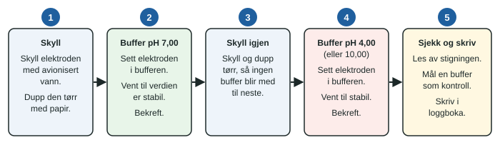

Lab: kalibrering
I denne laben kontrollerer og kalibrerer du tre instrumenter som du bruker hele tiden på laben: analysevekta, en fullpipette og pH-meteret. Du avgjør om hvert instrument er innenfor toleransen, og skriver resultatene i en kalibreringsprotokoll, slik en laborant gjør i jobben.
Mål
Etter laben skal du kunne
- kontrollere en analysevekt med en kontrollvekt
- kontrollere en fullpipette ved å veie vannet den leverer
- gjøre en topunktskalibrering av et pH-meter
- regne ut målefeil og avgjøre om et instrument er godkjent
- fylle ut en kalibreringsprotokoll
Les disse sidene før laben: Hvorfor kalibrere?, Kalibrering av laboratorieutstyr og Kalibreringsprotokoll og dokumentasjon.
- Bruk labfrakk og vernebriller hele tiden.
- Bufferløsning pH 10,00 er basisk og kan irritere øyne og hud. Les sikkerhetsdatabladet for bufferne dere bruker. Får du sprut i øynene, skyll med øyedusj i minst 15 minutter og si fra til læreren.
- Pipetter alltid med pipettehjelper, aldri med munnen. Hold pipetten nær toppen, og før den forsiktig og rett inn i pipettehjelperen. Den kan knekke og skjære deg.
- pH-elektroden og pipetten er av glass. Knust glass skal i egen beholder for glass, og du skal si fra.
- Tørk opp søl på og ved vekta med en gang.
- Brukte buffere og vann tas hånd om etter lærerens instruks.
Gå gjennom risikovurderingen for laben sammen med læreren før du starter.
Utstyr og kjemikalier
- analysevekt (0,0001 g) med loggbok
- kontrollvekt med kjent masse, for eksempel 50 g eller 100 g, med pinsett eller hansker
- fullpipette 10 mL og pipettehjelper
- avionisert vann med romtemperatur, i et beger med termometer
- beger eller veieglass med lokk, ca. 100 mL
- pH-meter med elektrode og loggbok
- bufferløsninger pH 4,00, 7,00 og 10,00
- fire små begre (ca. 50 mL), ett med lokk eller urglass, sprutflaske med avionisert vann og myke papirservietter
Del A: Daglig kontroll av analysevekta
- Sjekk kalibreringsetiketten på vekta. Har datoen for neste kalibrering gått ut, sier du fra til læreren.
- Sjekk at vekta har stått på lenge nok, se instruksen for vekta. Kontrollvekta skal ha stått ved vekta en stund, så den har romtemperatur.
- Sjekk at luftboblen i vaterglasset står midt i ringen. Hvis ikke, justerer du føttene på vekta, eller ber læreren om hjelp.
- Lukk dørene og nullstill vekta med tom skål.
- Sett kontrollvekta midt på skåla med pinsett eller hansker. Lukk dørene og vent til tallet er stabilt.
- Skriv ned avlest verdi. Ta loddet av, nullstill og gjenta to ganger til.
- Skriv resultatet i loggboka for vekta.
| Måling | Riktig masse (kontrollvekt) | Avlest | Målefeil |
|---|---|---|---|
| 1 | |||
| 2 | |||
| 3 |
Toleranse: ±0,0005 g, hvis læreren ikke gir en annen. Er alle tre målefeilene innenfor?
Del B: Gravimetrisk kontroll av en fullpipette
Du skal finne ut om fullpipetten leverer 10 mL innenfor toleransen som står på glasset. Du veier vannet den leverer, og regner om til volum med tettheten.
- Les og skriv ned det som står på pipetten: volum, toleranse, klasse og «Ex».
- Vannet skal ha stått i rommet en stund. Mål temperaturen på vannet og finn tettheten i tabellen under.
- Sett det tomme begeret (med lokk) på vekta og nullstill.
- Skyll pipetten først med litt av vannet. Pipetter så 10 mL vann ned i begeret slik du har lært: Fyll litt over streken, tørk utsiden av spissen og juster ned til bunnen av den buede væskeoverflaten (menisken) står på streken. La pipetten tømme seg med spissen mot veggen i begeret, og vent noen sekunder. Ikke blås ut den siste dråpen.
- Sett på lokket, les av massen og skriv den ned.
- Nullstill med begeret og vannet på, og pipetter 10 mL til oppå. Gjenta til du har fem målinger.
| Temperatur på vannet | Tetthet (g/mL) |
|---|---|
| 18 °C | 0,9986 |
| 19 °C | 0,9984 |
| 20 °C | 0,9982 |
| 21 °C | 0,9980 |
| 22 °C | 0,9978 |
| 23 °C | 0,9975 |
| 24 °C | 0,9973 |
| 25 °C | 0,9970 |
| Måling | Masse vann (g) |
|---|---|
| 1 | |
| 2 | |
| 3 | |
| 4 | |
| 5 | |
| Middelverdi |
Vannet er 20 °C, og tettheten er 0,9982 g/mL. Fem målinger ga 9,978 g, 9,982 g, 9,975 g, 9,980 g og 9,985 g.
- Middelverdi: (9,978 + 9,982 + 9,975 + 9,980 + 9,985) g / 5 = 49,900 g / 5 = 9,980 g.
- Volum: 9,980 g / 0,9982 g/mL = 9,998 mL.
- Målefeil: 9,998 mL − 10,00 mL = −0,002 mL.
- Toleransen på pipetten er ±0,02 mL. Feilen er godt innenfor.
- Spredning: Forskjellen mellom største og minste måling (variasjonsbredden) er 9,985 g − 9,975 g = 0,010 g, altså omtrent 0,01 mL. Målingene ligger tett, så du har pipettert jevnt.
Konklusjon: Pipetten er godkjent.
Dette er forenklet. Lufta løfter litt på vannet, så det riktige volumet er omtrent 0,01 mL større enn det du regner ut her. I nøyaktig arbeid, for eksempel på et akkreditert laboratorium, rettes det for dette.
Del C: Topunktskalibrering av pH-meteret
- Mål temperaturen i bufferne. pH i en buffer endrer seg litt med temperaturen. Finn riktig pH ved denne temperaturen i tabellen på flaska, og bruk den som riktig verdi.
- Hell litt pH 7,00 og pH 4,00 i hvert sitt merkede beger.
- Kalibrer pH-meteret med pH 7,00 og pH 4,00, slik figuren viser. Følg instruksen for meteret dere har.
- Skriv ned stigningen som meteret viser.
- Kontroll: Skyll elektroden, dupp den tørr og mål pH 7,00 på nytt i en ny porsjon buffer. Skriv ned verdien.
- Utenfor området: Hell pH 10,00 i et tredje beger rett før du måler, og dekk det til. Bufferen tar opp CO2 fra lufta, og da synker pH. Skyll, dupp tørr og mål. Skriv ned verdien.
- Skyll elektroden og sett den tilbake i oppbevaringsløsningen. Skriv resultatet i loggboka for pH-meteret.

| Hva | Riktig verdi (fra flaska) | Avlest | Målefeil |
|---|---|---|---|
| Stigning | Godkjent område: 95–105 % | – | |
| Kontroll pH 7,00 | |||
| Måling pH 10,00 |
Toleranse: ±0,05 pH, hvis læreren ikke gir en annen.
Kalibreringsprotokoll
Velg ett av de tre instrumentene og fyll ut en kalibreringsprotokoll for det. Bruk skjemaet under, på papir eller i et dokument. Se Kalibreringsprotokoll og dokumentasjon for et ferdig eksempel.
| Instrument | Type, nummer eller merking, måleområde |
|---|---|
| Toleranse | |
| Referanser | Kontrollvekt, bufferløsninger (batchnummer og utløpsdato) eller vann og termometer |
| Resultater | Riktig verdi, avlest verdi og målefeil i hvert punkt |
| Konklusjon | Godkjent eller ikke godkjent |
| Tiltak | Hva du gjorde, eller hva som bør gjøres |
| Dato og signatur |
Husk reglene: skriv med en gang, skriv tallene med enhet, og sett én strek over det som er feil i stedet for å viske ut.
Etter laben
1. Hvorfor gjorde du fem målinger med pipetten og ikke bare én?
Én måling kan ha en tilfeldig feil, for eksempel at du traff streken litt dårlig eller at en dråpe hang igjen. Med fem målinger og middelverdi blir resultatet sikrere. Variasjonsbredden, altså forskjellen mellom største og minste måling, viser også hvor jevnt du pipetterer.
2. Hvorfor måtte du vite temperaturen på vannet i del B?
Tettheten til vann endrer seg med temperaturen. Bruker du feil tetthet, blir volumet du regner ut feil. Pipetten er også kalibrert ved en bestemt temperatur, vanligvis 20 °C.
3. Hvorfor målte du pH 10,00 etter at du hadde kalibrert med pH 4,00 og 7,00?
pH 10,00 ligger utenfor området mellom de to bufferne du kalibrerte med. Målingen viser om meteret også måler riktig der. Er feilen større enn toleransen, bør du kalibrere med pH 7,00 og 10,00 hvis du skal måle basiske prøver.
4. Vekta viste 0,0008 g for mye med kontrollvekten. Hva gjør du, og hva skriver du i loggboka?
Feilen er større enn toleransen på 0,0005 g. Du bruker ikke vekta, merker den og sier fra til læreren. I loggboka skriver du dato, kontrollvekt, avlest verdi, målefeil, «ikke godkjent» og signaturen din.
5. Hva var den største feilkilden i laben, tror du? Hvordan kunne du gjort den mindre?
Svarene kan variere. Eksempler: luftbobler eller dråper i pipetten, at vannet fordampet under veiingen, trekk ved vekta, at bufferen ble forurenset fra forrige beger, eller at elektroden ikke var stabil før du bekreftet. Tiltak: lokk på begeret, lukkede dører på vekta, god skylling, og å vente til tallet er stabilt.
Les mer
- Kalibrering av laboratorieutstyr: bakgrunnen for alle tre delene.
- Masse, volum og tetthet i Fysiske prinsipper: å regne mellom masse og volum.
- Middelverdi, spredning og feilkilder kommer i emnet Rapportering og kvalitet i Laboratorium og analyse (kommer).
Om kildene: Teksten, oppgavene og eksemplet på denne siden er laget for dette nettstedet. Siden bygger på undervisningsopplegg i kjemiprosess- og laboratoriefag ved Sauda vgs, som er utarbeidet med utgangspunkt i blant annet Kjemien stemmer, Laboranten og åpne nettkilder.